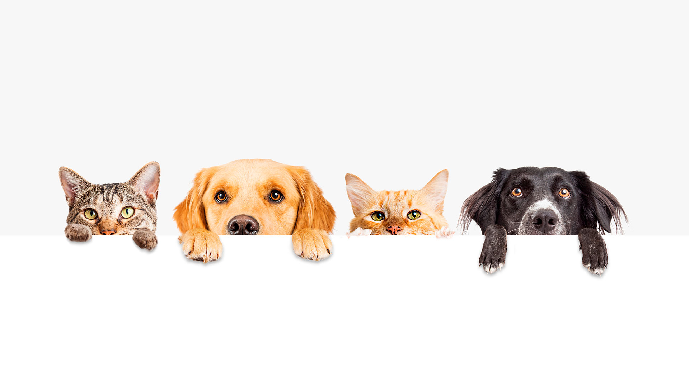

¿ QUE ES LA ADOPCION DE MASCOTAS ?

Adoptar una mascota es más que llevar un nuevo compañero a casa; es brindar una segunda oportunidad a un ser que necesita amor y cuidado. Miles de animales esperan en refugios por una familia que les ofrezca un hogar seguro y afectuoso.
La adopción no solo transforma la vida del animal, sino también la de quien adopta. Está comprobado que las mascotas ayudan a reducir el estrés, aumentan la felicidad y fomentan un estilo de vida activo. Al elegir adoptar, se contribuye a la disminución del abandono animal y al bienestar general de la comunidad.
Cada mascota tiene una historia única y un cariño infinito por compartir. Antes de adoptar, es importante considerar el compromiso que implica: tiempo, paciencia y responsabilidad. Si estás listo para darle un hogar a un amigo fiel, revisa nuestra sección de adopciones y encuentra a tu nuevo compañero de vida.
ANIMALES MAS ADOPTADOS:
~Perros~
~Un estudio indica que alrededor del 50% de los perros que llegan a refugios son adoptados.
~Gatos~
~Similarmente, alrededor del 47% de los gatos atendidos en refugios son adoptados.
~Peces~
~Son una opción popular para personas que buscan una mascota de baja manutención.
~Hámster~
~Son pequeños roedores que pueden ser adoptados como mascotas.
~Entre otros~
VIDEO...
"Adopta amor, no compres vidas."